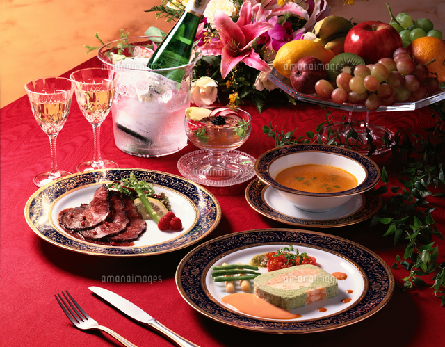
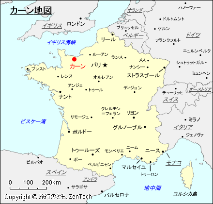
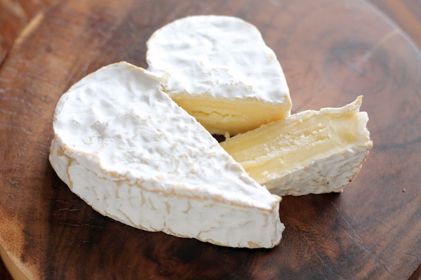
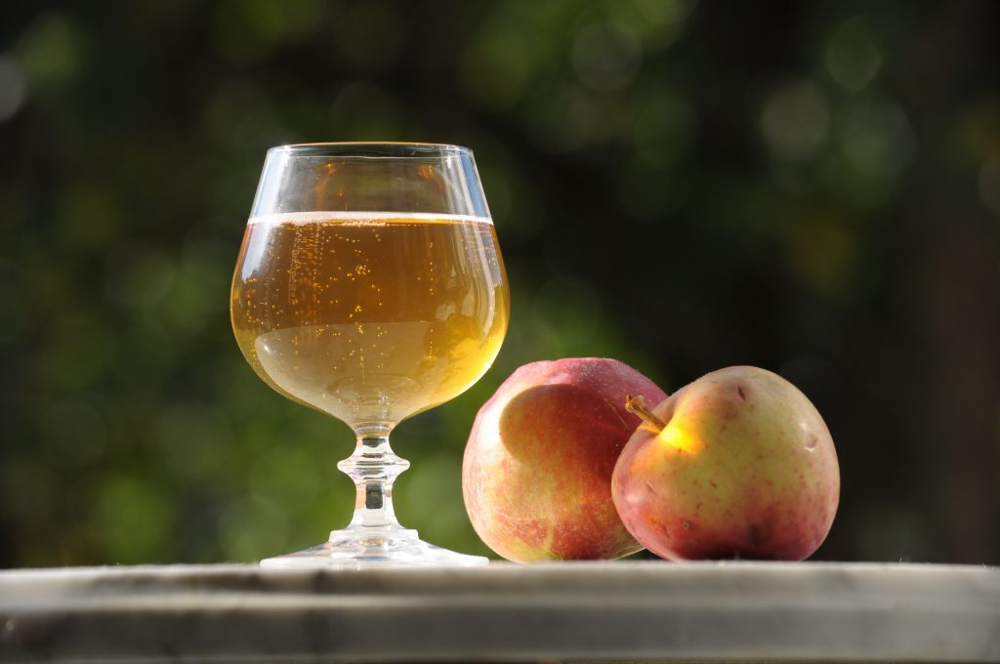
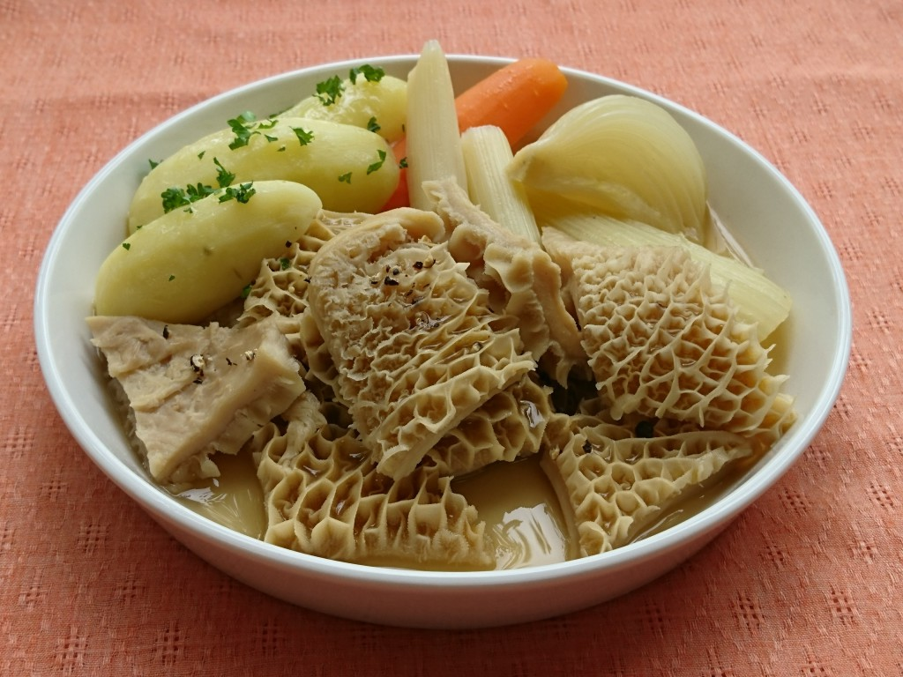

New
French food
French cuisine is characterized by its elaborate use of cooking techniques and seasonings, and its detailed table manners may give you an image of high class. However, there are many types of home cooking as well as course meals, and many of the Kern dishes I will introduce are familiar home cooking.
Travel . Events
June 24, 2020
36 comments
by Arisa Ishida

New
About Cearn
Cearn The region is located in Normandy, France.
Normandy is located in the northwest of France.
Characteristics of Normandy cuisine
The Normandy region is famous for its fruit growing and dairy farming. In addition, the Gulf region is rich in seafood such as sole, mussels, and small lobsters, while the inland region, which is the largest dairy area in France, is rich in dairy products and meat.
The common denominator in both is the use of fresh dairy products and creamy flavors. Many of the recipes for seafood soups and omelet sauces are creamy.
In addition, France is strongly associated with wine, but grapes do not grow well in Normandy, and instead apples are widely cultivated in the region.
Creative . Design . Business
June 16, 2020
48 comments
by Arisa Ishida

The birthplace of Camembert
Heart-shaped cheese Neuchâtel
If you cut a Neuchâtel that is covered with white mold, its inner layer is packed and the white core is a bit brittle, but otherwise smooth. The texture is creamy and can have a tangy, pungent taste. It is salty and has a strong flavor impression.
Music . Audio
June 11, 2020
by Arisa aishida

Fermented apple liquors such as ciders and calvados
Refers to apple distillates made in the district that includes most of the departments of Calvados, Manche, and Orne in Basse-Normandie, the department of Eure in Haute-Normandie, the departments of Mayenne and Sarthe in Pays de la Loire, and part of the department of Eure-et-Loire in Centre. Mainly uses a cylindrical distiller. It is aged in oak barrels for at least two years.
F
Artworks . Design
June 4, 2020
by Arisa Ishida

Cearn stewed beef tuna trip
A stew named after the town of Khan itself.
A cow has four stomachs, which are collectively called "trip" in French. It is slowly simmered with vegetables and spices, using cider or Calvados, another local specialty.
Title #099 New #0CC
Text #999 Line #CCC Next #0CC Prev #F0F0F0
Creative . Video . Audio
May 31, 2020
by Arisa Isihda
Japanese Restaurant in Cearn
When you leave Japan, you may miss Japanese food. But don't worry! There are Japanese restaurants in Karn. Restaurant Sakoura is a three-minute walk from Cearn Castle, where you can enjoy sushi, yakisoba, and sweet dishes such as yokan and mochi.
Visual . Artworks
June 16, 2020
by Arisa Ishida